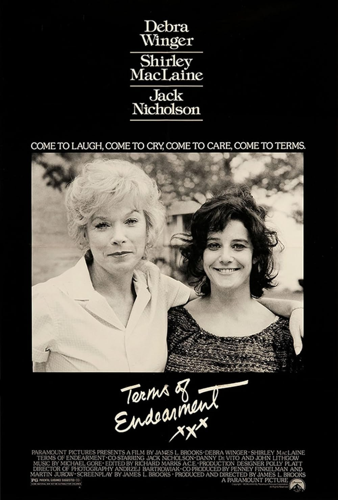

Terms of Endearment
56th Academy Awards
(Oscars 1984)
11 Nominations, 5 Awards
| Watched |
| Nominations | ||
|---|---|---|
| Category | Nominees | Result |
| Best Picture | James L. Brooks | Won |
| Actress in a Leading Role | Debra Winger | Nominated |
| Actress in a Leading Role | Shirley MacLaine | Won |
| Actor in a Supporting Role | Jack Nicholson | Won |
| Actor in a Supporting Role | John Lithgow | Nominated |
| Directing | James L. Brooks | Won |
| Writing (Screenplay Based on Material from Another Medium) | James L. Brooks | Won |
| Film Editing | Richard Marks | Nominated |
| Art Direction | Anthony Mondello, Harold Michelson, Polly Platt, and Tom Pedigo | Nominated |
| Sound | Donald O. Mitchell, Jim Alexander, Kevin O'Connell, and Rick Kline | Nominated |
| Music (Original Score) | Michael Gore | Nominated |